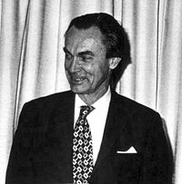

Sune Bergström
Sune Bergström var son till 1:e statshydrografen Sverker Bergström och Wera Wistrand. Han studerade utomlands (i England, Schweiz och USA) samt vid Karolinska Institutet, där han 1944 doktorerade och blev docent i biokemi. Han hade då sedan två år arbetat som assistent vid Nobelinstitutets biokemiska avdelning, en tjänst han kvarhöll till 1947 då han lämnade huvudstaden för professuren i medicinsk och fysiologisk kemi vid Lunds universitet. 1958 återvände han till Karolinska Institutet, som professor i kemi. Där stannade han till 1980 då han blev emeritus. Bergström var vid sidan av professuren rektor för Karolinska Institutet 1969–1977.
Han blev ledamot av Kungliga Ingenjörsvetenskapsakademien 1962 och av Kungliga Vetenskapsakademien 1965, var ordförande i Nobelstiftelsen 1975–1987 och blev preses (ordförande) för Vetenskapsakademien 1983. 1977 tilldelades han Albert Lasker Basic Medical Research Award, tillsammans med Bengt Samuelsson och John R. Vane. 1982 tilldelades Bergström Nobelpriset i fysiologi eller medicin tillsammans med sin kollega Bengt Samuelsson och britten John R. Vane för deras "upptäckter rörande prostaglandinerna och därmed nära anknutna biologiskt aktiva substanser".
Han var gift sedan 1943 med Maj Bergström (1911-2007) född Gernandt (dotter till fabrikör Ernest Gernandt) samt far till Rurik Reenstierna fd. Bergström och Svante Pääbo (båda födda 1955 men med olika mödrar).